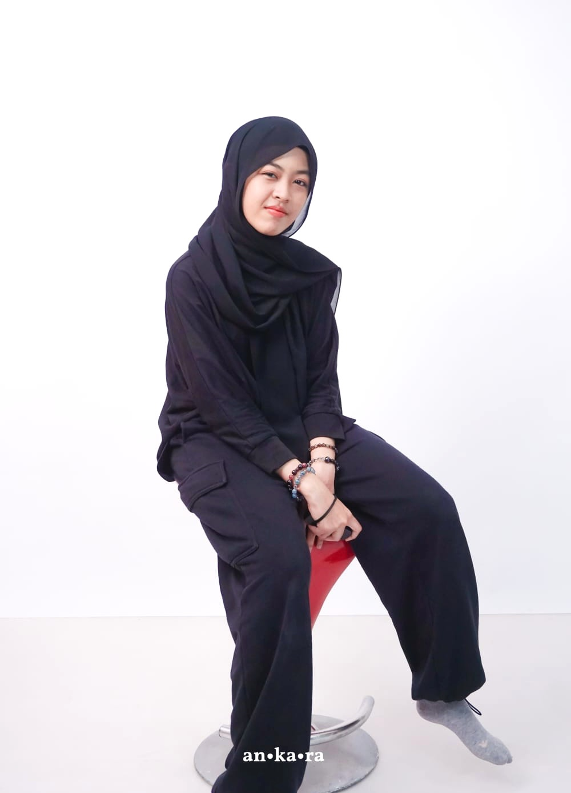
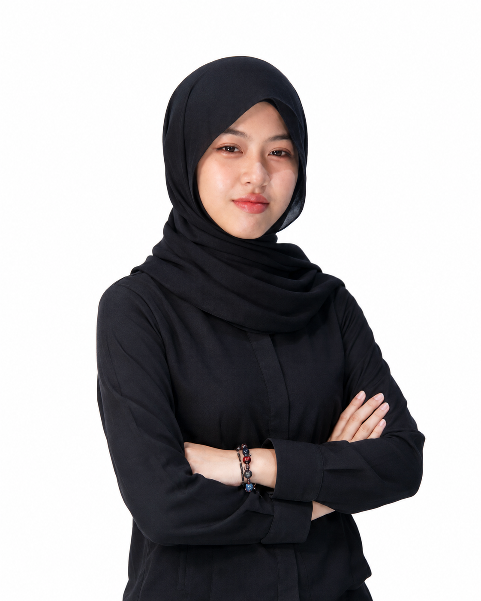
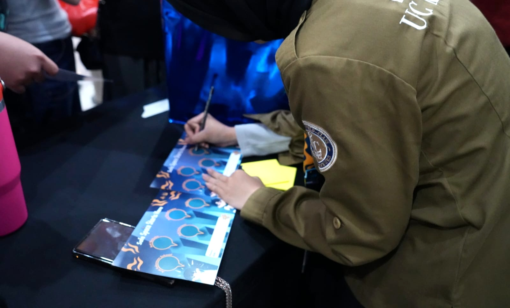
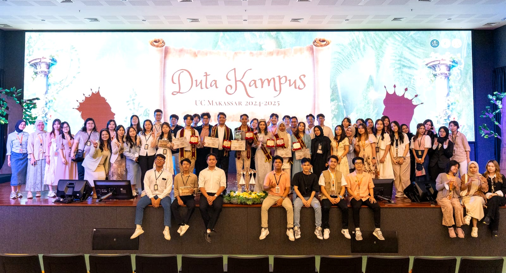
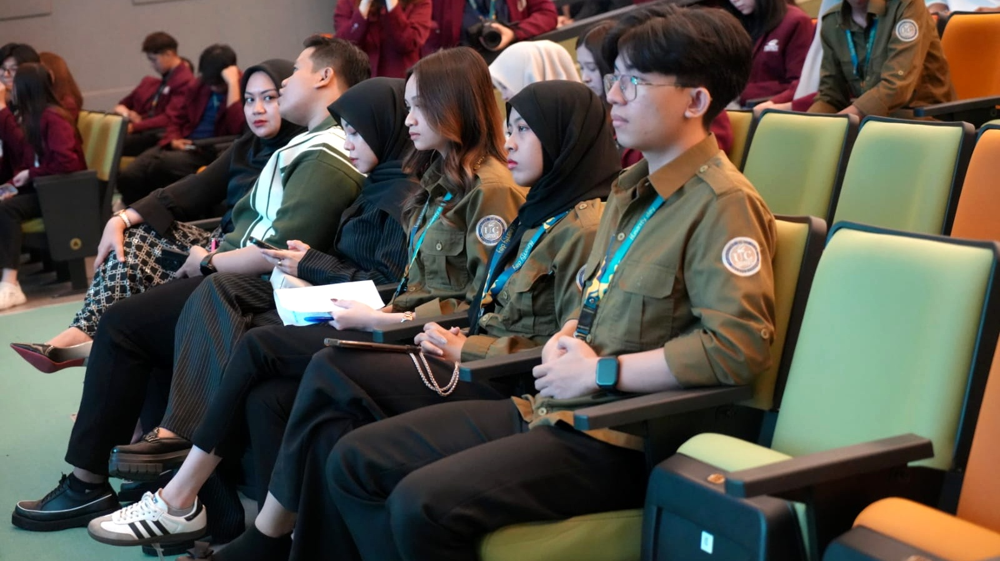

Personal & Professional Profile
International Business Management • Semester 4
Mahasiswi International Business Management Universitas Ciputra Makassar dengan fokus pada komunikasi bisnis, pengembangan ide, event operations, dan strategic execution.

Personal & Professional Profile
Top CliftonStrengths
Event Experiences
Leadership Positions
Career Directions
Profile Overview
Profil akademik yang dibangun dari kombinasi manajemen bisnis internasional, komunikasi, organisasi, event, dan kemampuan adaptasi pada lingkungan baru.

Mahasiswi aktif jurusan International Business Management generasi ke-4 UC Makassar. Sedang menjalani pendidikan S1 Manajemen semester 4. Memiliki rasa ingin tahu yang tinggi, cepat beradaptasi di lingkungan baru, serta senang belajar dan mengeksplorasi hal baru untuk meningkatkan kualitas pribadi.
Minat pada bisnis, komunikasi, event, dan pengembangan diri.
Aktif dalam organisasi, kepanitiaan, dan kegiatan kampus lintas divisi.
Memiliki kekuatan pada ide, strategi, relasi, dan fokus eksekusi.
Professional Identity
Top 5 CliftonStrengths diposisikan sebagai identitas profesional: memahami orang, menghasilkan ide, menyusun strategi, membangun relasi, dan menjaga fokus kerja.
Peka terhadap keunikan individu dan mampu melihat potensi terbaik setiap orang.
Kreatif, terbuka pada gagasan baru, dan mampu menghasilkan sudut pandang segar.
Mampu membaca pola, menyeleksi opsi, dan memilih rute paling efektif.
Membangun hubungan dekat, kolaboratif, dan dipercaya dalam kerja tim.
Mampu menetapkan prioritas, menjaga arah, dan menyelesaikan target secara konsisten.
Value Proposition
Kombinasi International Business Management dan kekuatan personal menjadikan Mazaya cocok untuk peran yang membutuhkan pemahaman manusia, kreativitas bisnis, pengambilan keputusan, dan koordinasi tim.
Memahami karakter orang dan menyesuaikan pendekatan komunikasi.
Melihat peluang baru dan merancang pendekatan yang lebih menarik.
Menyusun opsi, membaca risiko, dan menentukan arah kerja.
Menjaga prioritas sehingga pekerjaan selesai sesuai target.
Education Journey
Riwayat pendidikan dan identitas akademik yang mendukung pengembangan kompetensi bisnis, komunikasi, dan manajemen.
Samarinda City • Graduated 2024
Sarjana Manajemen • International Business Management • Semester 4
Mahasiswi aktif yang mengembangkan pengalaman organisasi dan event kampus.
Event & Organization
Pengalaman kepanitiaan dan lomba menunjukkan kemampuan koordinasi, komunikasi, manajemen waktu, dan adaptasi pada berbagai kebutuhan event.
Divisi LO Tenant
Leadership & Positions
2024/2025
Useeshow 2025/2026
2025/2026
2024 - sekarang
Project Highlights
Highlight pengalaman dalam event kampus: liaison officer, tenant handling, timekeeping, perlengkapan, logistik, dan operasional acara.



Penghubung peserta atau tenant dengan panitia.
Mengatur alur waktu agar kegiatan berjalan tertib.
Membantu kebutuhan teknis dan kelengkapan acara.
Mendukung keamanan, konsumsi, dan tenant management.
Capabilities
Career Direction
Dengan latar belakang International Business Management, pengalaman event, dan kekuatan personal, profil ini diarahkan ke bidang business development, marketing communication, event management, customer relation, dan operations support.
Membaca peluang, menyusun strategi, dan mengembangkan ide bisnis berdasarkan kebutuhan pasar.
Mengomunikasikan value, menyusun materi promosi, dan menjaga hubungan dengan audiens.
Mengelola alur acara, koordinasi tim, logistik, dan pengalaman peserta atau tenant.
Let’s Connect
Portofolio ini merangkum profil akademik, keunggulan individu, pengalaman organisasi, kemampuan komunikasi, dan arah pengembangan profesional Mazaya di bidang bisnis internasional.
Connect with me
Temukan dan terhubung dengan saya melalui berbagai platform media sosial.